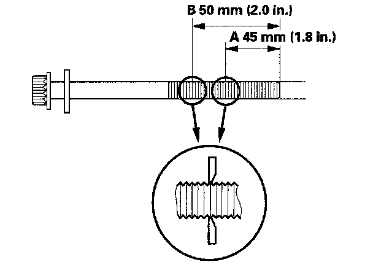
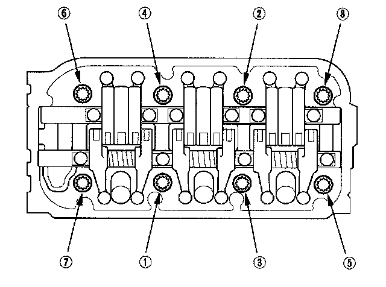
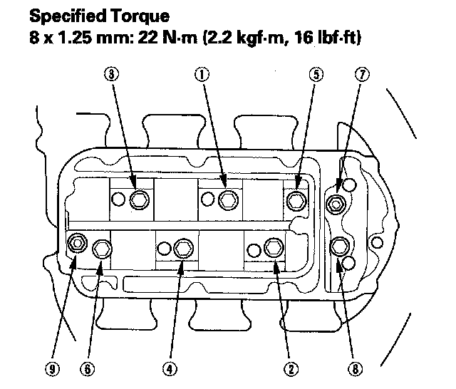

Tightening Torques
Cylinder HeadMeasure the diameter of each cylinder head bolt at point A and point B.

If either diameter is less than 11.3 mm (0.44 in.), replace the cylinder head bolt.
Tighten the cylinder head bolts in sequence to 30 N-m (3.0 kgf-m, 22 lbf-ft).

After torquing, tighten all cylinder head bolts in two steps (90° per step). If you are using a new cylinder head bolt, tighten the bolt an extra 90°.
Head
Warpage
Service Limit 0.05 mm (0.002 in.)
Height
Standard or New 120.95 - 121.05 mm (4.7618 - 4.7657 in.)
Intake Manifold

Install the intake manifold. Tighten the bolts and nuts sequentially in two or three steps.